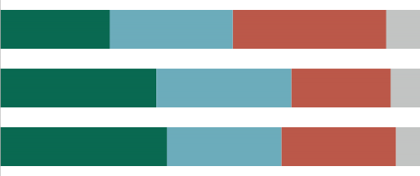
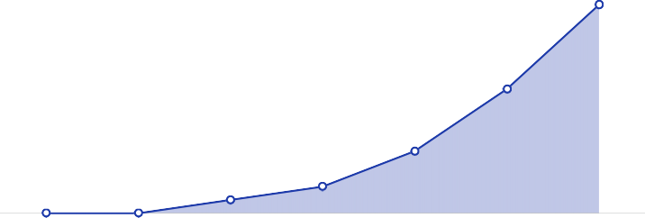

December 2022
2023 Trends in Fintech
Jordan McKee, Research Director, Fintech
Sampath Sharma Nariyanuri, Research Analyst, Fintech McKayla Wooldridge, Associate Research Analyst, Fintech
The preeminent trend in the fintech industry is embedding and delivering financial products at the moment of need. We expect this trend to both broaden and deepen moving into 2023, ultimately expanding the overall size of the fintech market opportunity.
To learn more or to request a demo, visit spglobal.com/marketintelligence.
Table of contents
Trend #1: Payment processors will double down on their
payments-as-a-service strategies 4
Trend #2: U.S. banking regulators and agencies will ramp up their fintech focus 5
Trend #3: Faster payments will find more takers, newer use cases 5
Trend #4: Fraud prevention will become a customer experience priority 6
Trend #5: Venture capitalists will gravitate toward fintech infrastructure providers 6
Trend #6: Brands will move deeper into embedded finance 7
Figure 1: Millennials, higher-income consumers show strong interest in accessing
financial services from brands 7
Trend #7: Banks will focus on white-label products to address demand for
finance at the point of need 8
Figure 2: Number of bank earnings calls in which banking as a service was mentioned 8
Trend #8: More fintechs will emerge to facilitate bank and fintech integrations 9
Trend #9: The fintech ecosystem will zero in on financial inclusion 9
Trend #10: Lending will continue growing closer to the point of need 9
Introduction
Until recently, free-flowing venture capital, low interest rates and a “growth above all else” mindset fueled an impression that nothing could throttle the fintech sector. In 2022, the rose-tinted glasses began to come off. From rising interest rates and inflation to more tepid investor sentiments and widespread layoffs, a significant — and, dare we say, overdue — reality check has begun to set in for fintech providers large and small.
A turbulent macroeconomic environment has arrived against the backdrop of a change in the fintech distribution model. Fintech is increasingly becoming
“embedded” by companies across industries. Paired with the current economic climate, the move toward embedded finance has attractively positioned infrastructure-oriented fintech providers, which are often characterized by slower cash burn rates and stickier institutional relationships. Behind the scenes, this trend is helping to foster a deeper sense of “better together” between fintechs and
incumbent financial institutions. Partnerships between the old and new guards of the financial services sector are becoming more commonplace as both parties look to address customers’ growing requirement for finance at the moment of need.
About this report
Reports such as this showcase insights derived from a variety of market-level research inputs, including financial data, M&A information and other market data sources both proprietary to S&P Global and publicly available. This input is combined with ongoing observation of markets and regular interaction with vendors and other key market players.
This report specifically includes data from the following sources:
Voice of the Connected User Landscape: Connected Customer, Fintech & Holiday Experience 2022 — This web-based survey was fielded Oct. 4-28, 2022 among approximately 5,000 U.S. respondents aged 18 or older.
Voice of the Connected User Landscape: Connected Customer, Quantifying the Customer Experience 2022 — This web-based survey was fielded Jul. 1-14, 2022 among approximately 5,000 U.S. respondents aged 18 or older.
Voice of the Enterprise: Customer Experience & Commerce, Merchant Study 2022
— This web-based survey was fielded Mar. 29-Apr. 21, 2022 among approximately 250 commerce technology decision-makers primarily in the U.S.
Despite the macroeconomic challenges, it is not difficult to find encouraging signs of innovation and progress throughout the fintech industry. Embedded finance and banking as a service are accelerating, partnerships between banks and fintechs are deepening, and fintech adoption rates among consumers and enterprises are increasing. While business-to-business and business-to-consumer fintech models remain prominent, the
emphasis on B2B2B and B2B2C distribution has increased throughout 2022. Fintech has evolved into something of an infrastructure layer that existing B2B and B2C organizations can build on to create new products and value propositions for their own customers. The direction of travel for the industry is now embedding and delivering financial products at the moment of need, which has attractively positioned fintech infrastructure providers with
as-a-service models. We expect this trend to both broaden and deepen moving into 2023, ultimately expanding the overall size of the fintech market opportunity.
2023 is likely to be a defining year for many fintechs as they navigate heightened market uncertainty and turbulence. The reality of needing to do more with less will settle in much of the market, and establishing staying power will demand recommitment to business fundamentals. Focusing on sustainable growth, taking measured risks and operating with greater pragmatism will be imperative. Further market consolidation seems inevitable, but so is further innovation. After all, it bears remembering that the modern fintech ecosystem was largely born out of the Great Recession.
Trends we anticipate for 2023
Trend #1: Payment processors will double down on their payments-as-a-service strategies
As more SMBs turn to software to run their businesses, SMB software providers are increasingly looking to offer payment processing services to enhance their customers’ user experience while increasing product stickiness and, of course, revenue. The upshot for the payments industry? Software is replacing bank branches and feet-on-the-street sales forces as the SMB payment processing distribution model. To adapt, payment service providers (PSPs) must pivot to a one-to-many approach to SMB customer acquisition by pursuing partnerships with software platforms.
Stripe Inc., through its Connect offering, was among the earliest to recognize this trend, helping it gain a meaningful head start in securing relationships with some of the largest software platforms such as Shopify Inc. and Xero Ltd. Many others, including Adyen NV, BlueSnap Inc. and Fidelity National Information Services (FIS) Inc. via its recent acquisition of Payrix Solution LLC, have worked throughout 2022 to position themselves as more attractive partners for software platforms that want to embed payment processing in their offerings. Looking ahead, most PSPs will need a payments- as-a-service strategy to remain competitive. Given the acceleration of the market and the sheer number of vertical SaaS platforms now looking to get into payments, we anticipate M&A could likely serve as an entry point for PSPs that are late movers, with targets such as Finix Payments Inc. and Tilled Inc. remaining. We also expect more PSPs to offer adjacent financial capabilities on an as-a-service basis, including working capital and card issuance, as Stripe and Adyen do today.
Trend #2: U.S. banking regulators and agencies will ramp up their fintech focus
The fintech industry has generally avoided intense scrutiny from U.S. banking regulators and government agencies, but this has begun to change in 2022. In
late Q3, the Consumer Financial Protection Bureau (CFPB) released its report on buy now, pay later (BNPL) following an inquiry launched in January 2021. The CFPB report called out several concerns pertaining to BNPL, including data harvesting and
credit overextension. It also indicated that the agency would begin developing guidance for BNPL providers and subjecting them to supervisory examinations akin to those required of credit card issuers. The Office of the Comptroller of the Currency (OCC) has also begun to take a more active stance, particularly toward banking as a service (BaaS). In August, the OCC cracked down on the BaaS compliance practices of Blue Ridge Bank NA, requiring the bank to, among other things, secure OCC approval prior to onboarding new fintech partners or launching new products and services with existing fintech partners. Tellingly, the OCC announced in November that it would establish an Office of Financial Technology in early 2023 to “provide strategic leadership, vision and perspective for the OCC’s financial technology activities and related supervision.”
While more government oversight of fintech should be expected, it’s not necessarily bad news. More
clarity from regulators gives fintech providers a better sense of the boundaries they can innovate within and removes ambiguity about the rules of engagement. If effectively implemented, clearer regulatory guidelines could drive further fintech innovation.
Trend #3: Faster payments will find more takers, newer use cases
The rise of real-time payments (RTP) in India, Brazil and Southeast Asia has spurred other countries to embrace open banking protocols and modernize their payment infrastructures. We believe universal bank
participation, allowing fintechs to gain direct or indirect (via sponsor banks) access to the core infrastructure, and building digital layer capabilities to support various payment use cases in both online and offline scenarios are critical to the success of RTP markets. Among notable launches, the U.S. should see the debut of
the FedNow service in 2023. We expect India, Brazil, Singapore, Malaysia, Thailand and Indonesia, among others, to build additional capabilities and deepen the use of instant payments.
In early stages, banks typically begin with “receive- only” capabilities to gain experience before building other services, including the ability to send faster payments. RTP often first gains prominence in
peer-to-peer settings and steadily extends to other payment flows: bill payments, consumer-to-merchant, business-to-consumer and business-to-business payments. The use of overlay services such as request- to-pay APIs helps to propel the uptake of RTP among businesses, reducing transaction costs compared
to card payments and improving the reconciliation process. Looking ahead, India and Southeast Asian markets could extend the account-to-account transfer protocols to cards and wallets to devise an interoperable ecosystem. Similarly, building linkages between RTP systems to drive cross-border payments could gain traction. Fintechs have a growing role to play in helping banks modernize payment systems and provide fraud management offerings to minimize risks for consumers and businesses.
Trend #4: Fraud prevention will become a customer experience priority
All too often, a business’s most loyal customers become collateral damage in its fraud- prevention efforts. As the digital economy accelerates, businesses of all varieties — fintechs, merchants and banks — cannot afford to allow fraud prevention to jeopardize their ability to attract, win and retain customers. The stakes are high. According to
our VoCUL: Connected Customer, Quantifying the Customer Experience 2022 survey, 29% of consumers have abandoned a transaction due to a false decline in the last six months. While reducing payment friction is an imperative, lowering the bar too much can be equally detrimental, considering 47% of consumers indicate that experiencing fraud would make them significantly less likely to interact with a preferred brand or retailer in the future.
With both relationships and revenue in jeopardy, businesses must take near-term steps to align their fraud prevention and customer experience priorities. Harnessing digital identity networks and leveraging dynamic/risk-based approaches to authentication
are part of the equation, but it’s important to recognize that fighting fraud is a bigger task than can be handled effectively by the fraud and risk management team alone. This team should collaborate with the customer experience group to ensure there is a unified understanding of the impact of fraud (and preventative efforts) on the end-to- end customer journey. Given the growing intersection of these areas, we expect that more CX professionals will have a seat at the table for fraud-prevention discussions in 2023. Fraud-prevention vendors should tailor their value propositions accordingly.
Trend #5: Venture capitalists will gravitate toward fintech infrastructure providers
Venture capital may remain restrained in 2023, but we anticipate the investment case for technology-driven business models in financial services will gain strength. Amid rising capital costs, venture capitalists will focus on runways and profitability and are likely to steer clear of capital-intensive businesses. Fintechs with infrastructure models will, however, enjoy a more positive outlook due to their slower cash burn rates and stickier institutional relationships with banks and enterprises. Consider that fintech providers delivering their products on an as-a-service basis raised more than $2 billion in 2022 (through October), according to S&P Global Market Intelligence.
Infrastructure providers of various kinds have a role to play in enabling the three major digital transformations currently underway: fintechs managing customer relationships as challenger or neo-banks; nonbanks embedding finance into day-to-day software; and traditional financial institutions and enterprises undertaking modernization.
As fintech infrastructure companies gain scale, banks and technology companies will see significant cost benefits in outsourcing more components of their stack. In
fragmented payments markets, VCs are likely to favor infrastructure-oriented providers that can help players such as banks and e-wallets build linkages with customer-
facing technology companies. To win the trust of investors, startups must evolve from enabling narrowly defined use cases to developing capabilities across the life cycle — from customer onboarding to retrieving data to payments acceptance to value-added services such as card issuance and loan origination. Under pressure to reduce cash burn, we expect some fintechs with B2B or B2C models to pivot toward B2B2B and B2B2C infrastructure provider models.
Trend #6: Brands will move deeper into embedded finance
Non-financial brands as diverse as Walgreen Co., T-Mobile US Inc., Apple Inc., Walmart Inc. and McLaren Racing Ltd. have made deeper moves into embedded finance over the past 18 months. While the trend of brands offering banking products and services directly to their customers is not new — retailers, for instance, have offered affinity cards and extended warranties for decades — we expect the aperture and depth of the opportunity to increase in 2023. Thanks to the rise of myriad fintech as-a-service providers such as Railsr, Deserve Inc. and Unit, it has never been easier for brands to launch a financial product, nor have the unit economics associated with doing so been more attractive.
Our research indicates there is an opportunity for brands with loyal followings to move deeper into embedded finance. While 26% of consumers indicate they would be extremely interested in accessing financial services (e.g., credit card, bank account) from their favorite non-financial brand/retailer, that figure rises to 37% of millennials and 40% of consumers with annual household income north of $99,999. We envision 2023 as the year embedded finance comes to life more broadly, and we expect to see more activity from brands across a number of areas, including credit cards, BNPL and stored value wallets.
Extremely interested (8-10) Neutral (5-7) Not at all interested (0-4) Don't know

26%
29%
37%
8%
37%
32%
24%
7%
40%
27%
27%
6%
All respondents
(n=1,684)
Millennials (born between 1981 and 1996)
(n=444)
Annual household income greater than $99,999 (n=297)
Q. On a scale of 0-10, please rate how interested you would be in accessing financial services (e.g., credit card, bank account) from your favorite non-financial brand/retailer if they began offering them, where 0 is not at all interested and 10 is extremely interested. - Interest in accessing financial services (e.g., credit card, bank account) from your favorite non- financial brand/retailer.
Base: All respondents (n=1,684).
Source: VoCUL: Connected Customer, Fintech & Holiday Experience 2022.
Large technology companies are increasingly interested in offering self-branded financial services, especially in emerging markets where margins are low, with a view to capture value in distribution and customer engagement. The trend is unfolding across a range of verticals, including e-commerce, mobility, travel and delivery platforms. This is transforming the common conception of financial services as stand-alone products to one of embeddable offerings that integrate into the user interface of other digital products. Banks have a role to play here, and those that do often see greater growth by serving consumers and businesses tethered to digital platforms than through their proprietary distribution channels.
“White-label” banking offerings will bring banks to a much larger playing field compared to current co-branded arrangements. Further, banking-as-a-service relationships
can allow financial institutions to reclaim some of the market share conceded to fintechs. With white-label offerings, banks can bring to bear their account opening and management and compliance and regulatory capabilities. We expect white-label integrations to accelerate across categories such as savings and current accounts, closed-loop wallets, cards, BNPL, insurance, and personal and mortgage loans.
While some banks have been wary of conceding control over consumer relationships, we expect to see more of them externalizing their products and services to their nonbanking partners (see Figure 2). Banks seeking to expand their balance sheets without significant capital tied to brick-and-mortar branches are among those most likely to embrace the strategy of passively building their deposits and loan assets.

28
14
6
0
0
3
47
2016 2017 2018 2019 2020 2021 2022 YTD
(Sep.)
Source: S&P Global Capital IQ Pro, 2022.
Trend #8: More fintechs will emerge to facilitate bank and fintech integrations
Fintechs and financial institutions were once considered staunch competitors. Today, they are partnering to bring digital banking products and other types of financial services to market. Effective collaboration between banks and fintechs requires finding the right partners for business needs, integrating systems and managing ongoing operational processes and compliance. This has given rise to a new wave of fintechs, such as Synctera Inc. and Apiture Inc., that serve as intermediaries
to orchestrate integrations between banks’ legacy technology stacks and their more modern fintech partners. We’ve seen a similar concept in the buy now, pay later market where white-label BNPL providers, such as ChargeAfter Inc., are connecting merchants to a broad network of lenders to meet a variety of lending needs and boost acceptance rates.
As partnership opportunities between fintechs and financial institutions increase, inevitably so will the need for partners that can streamline the integration and onboarding processes between financial institutions and their fintech partners. We see a growing opportunity for more types of such orchestrators, with the aim of accelerating time to market and providing simplified access to a wide range of financial products.
Trend #9: The fintech ecosystem will zero in on financial inclusion
Fintechs and financial institutions are recognizing an opportunity to expand the financial services market opportunity by better serving unbanked and
underbanked consumers. Financial inclusion initiatives and use cases are becoming increasingly abundant across the fintech ecosystem. For example, Nova Credit Inc.’s Credit Passport platform helps standardize international credit data for U.S. underwriters so that immigrants can have easier access to credit. SolasAI and Zest AI Inc. are using AI/ML to connect to more data points to make lending more equitable. Various financial institutions are removing or capping overdraft fees in response to pressure from fintechs, including some of the largest banks that have long profited from these types of fees. Outside of the U.S., Latin America has emerged as a hotbed for financial inclusion fintech activity, especially in markets such as Brazil.
Ultimately, the movement toward more accessible and affordable financial services is pushing financial institutions and fintechs alike to reevaluate their customer acquisition strategies and revenue models.
We expect a greater emphasis on equitable approaches to financial services in the years ahead, especially against the backdrop of an enhanced industry-wide focus on environmental, social and governance (ESG) factors. Providers that fall behind in this area not only risk losing revenue and customers; they could become the focus of industry regulators.
Trend #10: Lending will continue growing closer to the point of need
Lending is growing closer to the point of need, enabling customers to quickly access funds tailored to their individual financial needs and credit profiles. This trend not only enhances the customer experience,
but it enables businesses that offer lending services to generate revenue, better engage with customers and create a stickier value proposition. BNPL is one example: More than 7 in 10 merchants that offer BNPL strongly agree that it has helped attract new customers, increase average purchase size and
increase their conversion rates, according to our Voice of the Enterprise: Customer Experience & Commerce, Merchant Study 2022. While BNPL adoption has accelerated, we see a much broader opportunity
for enterprises, fintechs and financial institutions to participate in the embedded lending market. With embedded lending, fintechs and their bank partners extend their infrastructure so non-financial companies can offer lending services under their own brand, such as by offering working capital, credit cards and point-of- sale financing. DoorDash Inc. and Amazon.com Inc., for instance, have recently begun offering their business customers cash advances through their fintech partner Parafin Inc.
Ultimately, embedded lending is launching more brands into financial services while creating partnership opportunities between the financial institutions and fintechs providing the underlying balance sheet and underwriting infrastructure. We expect embedded lending to accelerate as fintechs and financial institutions seek increased distribution and as businesses look for new ways to engage with customers, drive incremental revenue and differentiate their offerings.
S&P Global Market Intelligence provides essential insight into key trends driving digital transformation across the entire technology, media and telecommunications (TMT) landscape. By offering a combination of expert analyst insight and differentiated data, our TMT Research group enables the industry with the information and perspectives they require to make more effective decisions.
Reports such as this offer a holistic perspective on key trends and themes driving the technology, media and telecommunications space over the coming year. These markets evolve quickly, so S&P Global Market Intelligence offers a wide range of research services that provide critical marketplace updates on an ongoing basis. These reports, datasets and perspectives are published frequently, in numerous short- and long-form factors, available on S&P Capital IQ Pro and 451Research.com. Forward-looking M&A analysis and perspectives on strategic acquisitions and the liquidity environment for TMT companies are also updated regularly via these platforms, backed by industry- leading databases such as the 451 Research M&A KnowledgeBase.
Our research is organized into channels that align with the prevailing key issues driving digital transformation across TMT. These channels are: Applied Infrastructure & DevOps; Cloud & Managed Services Transformation; Cloud Native; Customer Experience & Commerce; Data, AI & Analytics; Datacenter Services & Infrastructure; ESG; FinTech; Global Media; Global Mobile; Global Multichannel and Broadband; Information Security; Internet of Things; and Workforce Productivity & Collaboration.
For more information about S&P Global Market Intelligence, please go to: Vital TMT Insight | S&P Global Market Intelligence (spglobal.com).
Further reading
APAC fintech market primer, Part 3: Big tech in finance, November 2022 APAC fintech market primer, Part 2: Digital payments overview, October 2022 APAC fintech market primer, Part 1: Follow the money, October 2022
Embedded lending launches more players into financial services, October 2022
State of US fintech adoption: Usage set to grow as banks fall behind in digital experience, September 2022
The Evolution of Buy Now, Pay Later, August 2022 Considering the total cost of payments, July 2022
Merchants Look To Optimize Payments and Fraud Prevention for Improved Business Outcomes, July 2022
A primer on embedded finance and “fintech as a service,” May 2022 The state of consumer cryptocurrency adoption, March 2022
Exploring the Payments Opportunity for B2B Software Platforms, March 2022
Jordan McKee
Sampath Sharma Nariyanuri
McKayla Wooldridge
About S&P Global Market Intelligence
S&P Global Market Intelligence’s Technology, Media and Telecommunications (TMT) Research provides essential insight into the pace and extent of digital transformation across the global TMT landscape. Through the 451 Research and Kagan products, TMT Research offers differentiated insight and data on adoption, innovation and disruption across the telecom, media and technology markets, backed by a global team of industry experts, and delivered via a range of syndicated research, advisory and go-to-market services, and live events.
CONTACTS
The Americas
+1 877 863 1306
market.intelligence@spglobal.com
Europe, Middle East & Africa
+44 20 7176 1234
market.intelligence@spglobal.com
Asia-Pacific
+852 2533 3565
market.intelligence@spglobal.com www.spglobal.com/marketintelligence
Copyright © 2022 by S&P Global Market Intelligence, a division of S&P Global Inc. All rights reserved.
These materials have been prepared solely for information purposes based upon information generally available to the public and from sources believed to be reliable. No content (including index data, ratings, credit-related analyses and data, research, model, software or other application or output therefrom) or any part thereof (Content) may be modified, reverse engineered, reproduced or distributed in any form by any means, or stored in a database or retrieval system, without the prior written permission of S&P Global Market Intelligence or its affiliates (collectively S&P Global). The Content shall not be used for any unlawful or unauthorized purposes. S&P Global and any third-party providers (collectively S&P Global Parties) do not guarantee the accuracy, completeness, timeliness or availability of the Content. S&P Global Parties are not responsible for any errors or omissions, regardless of the cause, for the results obtained from the use of the Content. THE CONTENT IS PROVIDED ON “AS IS” BASIS. S&P GLOBAL PARTIES DISCLAIM ANY AND ALL EXPRESS OR IMPLIED WARRANTIES, INCLUDING, BUT NOT LIMITED TO, ANY WARRANTIES OF MERCHANTABILITY
OR FITNESS FOR A PARTICULAR PURPOSE OR USE, FREEDOM FROM BUGS, SOFTWARE ERRORS OR DEFECTS, THAT THE CONTENT’S FUNCTIONING WILL BE UNINTERRUPTED OR THAT THE CONTENT WILL OPERATE WITH ANY SOFTWARE OR HARDWARE
CONFIGURATION. In no event shall S&P Global Parties be liable to any party for any direct, indirect, incidental, exemplary, compensatory, punitive, special or consequential damages, costs, expenses, legal fees, or losses (including, without limitation, lost income or lost profits and opportunity costs or losses caused by negligence) in connection with any use of the Content even if advised of the possibility of such damages.
S&P Global Market Intelligence’s opinions, quotes and credit-related and other analyses are statements of opinion as of the date they are expressed and not statements of fact or recommendations to purchase, hold, or sell any securities or to make any investment decisions, and do not address the suitability of any security. S&P Global Market Intelligence may provide index data.
Direct investment in an index is not possible. Exposure to an asset class represented by an index is available through investable instruments based on that index. S&P Global Market Intelligence assumes no obligation to update the Content following publication in any form or format. The Content should not be relied on and is not a substitute for the skill, judgment and experience of the user, its management, employees, advisors and/or clients when making investment and other business decisions. S&P Global keeps certain activities of its divisions separate from each other to preserve the independence and objectivity of their respective activities. As a result, certain divisions of S&P Global may have information that is not available to other S&P Global divisions. S&P Global has established policies and procedures to maintain the confidentiality of certain nonpublic information received in connection with each analytical process.
S&P Global may receive compensation for its ratings and certain analyses, normally from issuers or underwriters of securities or from obligors. S&P Global reserves the right to disseminate its opinions and analyses. S&P Global’s public ratings and analyses are made available on its websites, www.standardandpoors.com (free of charge) and www.ratingsdirect.com (subscription), and may be distributed through other means, including via S&P Global publications and third-party redistributors. Additional information about our ratings fees is available at www.standardandpoors.com/usratingsfees.